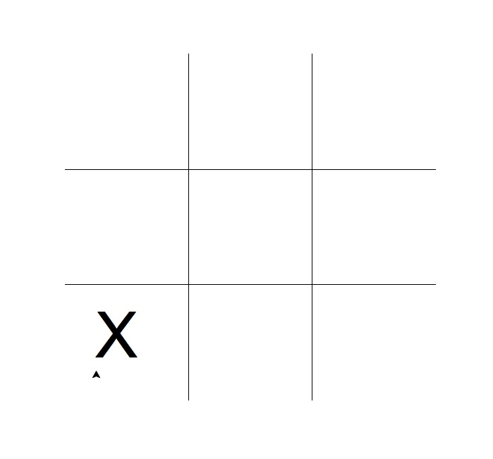

Turtle Tic-Tac-Toe (Version 1)
For today's lab, we're going to write a very simple Tic-Tac-Toe program. Our first program will allow the user to specify moves. As we learn more programming over the semester, we extend this program to check who wins and to make sure the user specifies legal moves uture versions of this program.
The first thing we need to do for Tic-Tac-Toe is to draw the game board:

To do that, we need our turtle to draw 2 horizontal lines, followed by 2 vertical lines. To make calculating where to draw easier, we will reset the coordinates so that the x-values range from -0.5 to 3.5 and the y-values also range from -0.5 to 3.5.
#Introductory Program, Spring 2015
#Lehman College, City University of New York
#First Version of Tic-Tac-Toe
# This version does NO checking of anything (it doesn't
# check who wins, doesn't check for legal entries, etc).
# We will add that later in the semester
from turtle import *
def main():
#Set up the screen and turtle
win = Screen()
tic = Turtle()
tic.speed(10)
#Change the coordinates to make it easier to translate moves to screen coordinates:
win.setworldcoordinates(-0.5,-0.5,3.5, 3.5)
#Draw the horizontal bars of the game board:
for i in range(1,3):
tic.up()
tic.goto(0,i)
tic.down()
tic.forward(3)
#Draw the vertical bars of the game board:
tic.left(90) #Point the turtle in the right direction before drawing
for i in range(1,3):
tic.up()
tic.goto(i,0)
tic.down()
tic.forward(3)
main()
Save this file to your USB or MyDocuments folder and run the
program. The first block of code sets up a turtle, called tic and a graphics window called win. We will use tic to draw the lines of the game board as well as mark the players moves.
The next section uses a for-loop with values for i ranging over 1,2 (from the start value of 1 upto but not including the stop value of 3). Each time it moves to the point (0,i) and goes forward (drawing a line as it goes) 3 steps. The up and down commands lift up and put down the drawing pen, respectively.
The second for-loop is similar. To make the turtle draw vertical lines, we turn the turtle 90 degrees to the left before starting our loop.
Add to your program (after the second for-loop, but before the invocation of main() at the end of the file):
tic.up() #Don't need to draw any more lines, so, keep pen up
#Ask the user for the moves, alternating between the players X and O:
for i in range(4):
x,y = eval(input("Enter x, y coordinates for X's move: "))
tic.goto(x+.25,y+.25)
tic.write("X",font=('Arial', 90, 'normal'))
x,y = eval(input("Enter x, y coordinates for O's move: "))
tic.goto(x+.25,y+.25)
tic.write("O",font=('Arial', 90, 'normal'))
#Display an ending message:
tic.goto(-0.25,-0.25)
tic.write("Thank you for playing!",font=('Arial', 20, 'normal'))
win.exitonclick()#Closes the graphics window when mouse is clicked
Our for-loop here is a bit more complicated. Lets go through it line by line:
tic.up() #Don't need to draw any more lines, so, keep pen up
We lift up the pen before starting the loop, since we don't need to draw any more lines (just write text to the screen).
#Ask the user for the moves, alternating between the players X and O:
for i in range(4):
The range only has a single input parameter, so, it defaults to starting at 0 and going upto, but not including the number 4, yielding the sequence of 0,1,2,3. Our first time through the loop i will be 0, the next time it will be 1, and we keep going until the last time it is 3.
x,y = eval(input("Enter x, y coordinates for X's move: "))
tic.goto(x+.25,y+.25)
tic.write("X",font=('Arial', 90, 'normal'))
These next lines ask the user to enter the x, y coordinates. The program is using the following coordinates for the squares:

At the Python shell, if the user entered 0,0:
Enter x, y coordinates for X's move: 0,0Then tic would move to (0+.25, 0+.25) = (0.25,0.25) and write out a large X (the .25 are added to make the marks a bit more centered on the game board). The graphics window would display:

The next part of the body of the for-loop asks for the second player's move:
x,y = eval(input("Enter x, y coordinates for O's move: "))
tic.goto(x+.25,y+.25)
tic.write("O",font=('Arial', 90, 'normal'))
and draws an O to the screen where they indicated.
The for-loop will repeat 4 times. Each time, it asks the first user for a move and the second user for the move. Here is sample run of the program:

The moves are entered on the Python shell and displayed on the graphics window. Some challenges to try (ask your instructor for hints if you do not see how to do these, since questions like these will appear on quizzes and exams):
- Modify your program to print a welcome message (but no extra turtle drawn lines) to the program.
- Since each time through the loop we did two moves (one for the first player and one for the second player), we have 8 moves altogether. But there's 9 squares to be filled in. Add several lines at the end of the program (just after, but not inside, the last 4 loop) to give X one more turn.
Note: as we learn more programming, we will add to this program to have it check if the players entered legal moves and also to check to see if a player has won the game (by having three in a row, horizontally, vertically, or on the diagonals).